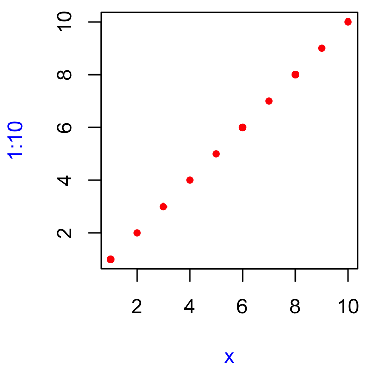

6 Functions
6.1 Introduction
If you’re reading this book, you’ve probably already created many R functions and know how to use them to reduce duplication in your code. In this chapter, you’ll learn how to turn that informal, working knowledge into more rigorous, theoretical understanding. And while you’ll see some interesting tricks and techniques along the way, keep in mind that what you’ll learn here will be important for understanding the more advanced topics discussed later in the book.
Quiz
Answer the following questions to see if you can safely skip this chapter. You can find the answers in ??.
What are the three components of a function?
What does the following code return?
How would you usually write this code?
How could you make this call easier to read?
Does the following code throw an error when executed? Why/why not?
What is an infix function? How do you write it? What’s a replacement function? How do you write it?
How do you ensure that cleanup action occurs regardless of how a function exits?
Outline
Section 6.2 describes the basics of creating a function, the three main components of a function, and the exception to many function rules: primitive functions (which are implemented in C, not R).
Section 6.3 shows you how R finds the value associated with a given name, i.e. the rules of lexical scoping.
Section 6.4 is devoted to an important property of function arguments: they are only evaluated when used for the first time.
Section 6.6 discusses the two primary ways that a function can exit, and how to define an exit handler, code that is run on exit, regardless of what triggers it.
Section 6.7 shows you the various ways in which R disguises ordinary function calls, and how you can use the standard prefix form to better understand what’s going on.
6.2 Function fundamentals
To understand functions in R you need to internalise two important ideas:
Functions are objects, just as vectors are objects.
Functions can be broken down into three components: arguments, body, and environment.
There are exceptions to every rule, and in this case, there is a small selection of “primitive” base functions that are implemented purely in C.
6.2.1 First-class functions
The most important thing to understand about R is that functions are objects in their own right, a language property often called “first-class functions”. Unlike in many other languages, there is no special syntax for defining and naming a function: you simply create a function object (with function) and bind it to a name with <-:

While you almost always create a function and then bind it to a name, the binding step is not compulsory. If you choose not to give a function a name, you get an anonymous function. This is useful when it’s not worth the effort to figure out a name:
lapply(mtcars, function(x) length(unique(x)))
Filter(function(x) !is.numeric(x), mtcars)
integrate(function(x) sin(x) ^ 2, 0, pi)A final option is to put functions in a list:
In R, you’ll often see functions called closures. This name reflects the fact that R functions capture, or enclose, their environments.
6.2.2 Function components
A function has three parts:
The
formals(), the list of arguments that control how you call the function.The
body(), the code inside the function.The
environment(), the data structure that determines how the function finds the values associated with the names.
I’ll draw functions as in the following diagram. The black dot on the left is the environment. The two blocks to the right are the function arguments. I won’t draw the body, because it’s usually large, and doesn’t help you understand the “shape” of the function.

While the formals and body are specified explicitly when you create a function, the environment is specified implicitly, based on where you defined the function. The function environment always exists, but it is only printed when the function isn’t defined in the global environment.
f02 <- function(x) {
# A comment
x ^ 2
}
formals(f02)
#> $x
body(f02)
#> {
#> x^2
#> }
environment(f02)
#> <environment: R_GlobalEnv>Like all objects in R, functions can also possess any number of additional attributes(). One attribute used by base R is “srcref”, short for source reference. It points to the source code used to create the function. The srcref is used for printing because, unlike body(), it contains code comments and other formatting.
6.2.3 Primitive functions
There is one exception to the rule that a function has three components. Primitive functions, like sum() and [, call C code directly.
They have type “builtin” or “special”:
These functions exist primarily in C, not R, so their formals(), body(), and environment() are all NULL:
Primitive functions are only found in the base package. While they have certain performance advantages, this benefit comes at a price: they are harder to write. For this reason, R-core generally avoids creating them unless there is no other option.
6.2.4 Exercises
Given a function, like
"mean",match.fun()lets you find a function. Given a function, can you find its name? Why doesn’t that make sense in R?It’s possible (although typically not useful) to call an anonymous function. Which of the two approaches below is correct? Why?
A good rule of thumb is that an anonymous function should fit on one line and shouldn’t need to use
{}. Review your code. Where could you have used an anonymous function instead of a named function? Where should you have used a named function instead of an anonymous function?What function allows you to tell if an object is a function? What function allows you to tell if a function is a primitive function?
This code makes a list of all functions in the base package.
Use it to answer the following questions:
Which base function has the most arguments?
How many base functions have no arguments? What’s special about those functions?
How could you adapt the code to find all primitive functions?
What are the three important components of a function?
When does printing a function not show the environment it was created in?
6.3 Lexical scoping
In Names and values, we discussed assignment, the act of binding a name to a value. Here we’ll discuss scoping, the act of finding the value associated with a name.
The basic rules of scoping are quite intuitive, and you’ve probably already internalised them, even if you never explicitly studied them. For example, what will the following code return, 10 or 20?18
In this section, you’ll learn the formal rules of scoping as well as some of its more subtle details. A deeper understanding of scoping will help you to use more advanced functional programming tools, and eventually, even to write tools that translate R code into other languages.
R uses lexical scoping19: it looks up the values of names based on how a function is defined, not how it is called. “Lexical” here is not the English adjective “relating to words or a vocabulary”. It’s a technical CS term that tells us that the scoping rules use a parse-time, rather than a run-time structure.
R’s lexical scoping follows four primary rules:
- Name masking
- Functions vs. variables
- A fresh start
- Dynamic lookup
6.3.1 Name masking
The following example illustrates the most basic principle of lexical scoping: names defined inside a function mask those defined outside of it.
If a name isn’t defined inside a function, R will look one level up.
The same rules apply if a function is defined inside another function: look inside the current function, then where that function was defined, and so on, all the way up to the global environment, and then on to other loaded packages.
Run the following code in your head, then confirm the output by running the R code.20
The same rules apply to functions created by other functions, which we’ll call closures. Closures will be described in more detail in [closures]; here we’ll just look at how they interact with scoping. The following function, g05(), returns a function. What do you think this function will return when we call it?21
This seems a little magical: how does R know what the value of y is after j() has returned? It works because k preserves the environment in which it was defined and because the environment includes the value of y. You’ll learn more about how environments work in Environments.
6.3.2 Functions vs. variables
In R, functions are ordinary objects. This means the same scoping principles that apply to other objects also apply to functions:
The rule gets a little more complicated when a name is bound to a function and a non-function in different environments. When you use a name in function call, R will ignore non-function objects while looking for that value. For example, here g9 takes on two different values:
But using the same name for two different things will make for confusing code, and is best avoided!
6.3.3 A fresh start
What happens to the values in between invocations of a function? What will happen the first time you run this function? What will happen the second time?22 (If you haven’t seen exists() before: it returns TRUE if there’s a variable of that name, otherwise it returns FALSE.)
You might be surprised that g11() always returns the same value. That happens because a new environment is created to host its execution every time a function is called. That means a function has no way to tell what happened the last time it was run; each invocation is completely independent. (We’ll see some ways to get around this in Section 11.2.3.)
6.3.4 Dynamic lookup
Lexical scoping determines where to look for values, not when to look for them. R looks for values when the function is run, not when it’s created. This means that the output of a function can differ depending on objects outside its environment:
This behaviour can be quite annoying. If you make a spelling mistake in your code, you won’t get an error when you create the function, and you might not even get one when you run the function, depending on what variables are defined in the global environment.
One way to detect this problem is to use codetools::findGlobals(). This function lists all the external dependencies (unbound symbols) within a function:
Another way to solve the problem would be to manually change the environment of the function to the emptyenv(), an environment which contains nothing:
Both of these approaches reveal why this undesirable behaviour exists: R relies on lexical scoping to find everything, even the + operator. This provides a rather beautiful simplicity to R’s scoping rules.
6.3.5 Exercises
What does the following code return? Why? Describe how each of the three
c’s is interpreted.What are the four principles that govern how R looks for values?
What does the following function return? Make a prediction before running the code yourself.
6.4 Lazy evaluation
In R, function arguments are lazily evaluated: they’re only evaluated if accessed. For example, this code doesn’t generate an error because x is never used:
This is an important feature because it allows you to do things like include potentially expensive computations in function arguments that will only be evaluated if needed.
6.4.1 Forcing evaluation
To compel the evaluation of an argument, use force():
h02 <- function(x) {
force(x)
10
}
h02(stop("This is an error!"))
#> Error in force(x):
#> This is an error!It is usually not necessary to force evaluation. It’s needed primarily for certain functional programming techniques which we’ll cover in detail in function operators. Here, I want to show you the basic issue.
Take this small but surprisingly tricky function. It takes a single argument x, and returns a function that returns x when called.
There’s a subtle issue with this function: the value of x will be captured not when you call capture(), but when you call the function that capture() returns:
Even more confusingly this only happens once: the value is locked in after you have called h03()/h04() for the first time.
This behaviour is a consequence of lazy evaluation. The x argument is evaluated once h03()/h04() is called, and then its value is cached. We can avoid the confusion by forcing x:
6.4.2 Promises
Lazy evaluation is powered by a data structure called a promise, or (less commonly) a thunk. We’ll come back to this data structure in metaprogramming because it’s one of the features of R that makes it most interesting as a programming language.
A promise has three components:
The expression, like
x + ywhich gives rise to the delayed computation.The environment where the expression should be evaluated.
The value, which is computed and cached when the promise is first accessed by evaluating the expression in the specified environment.
The value cache ensures that accessing the promise multiple times always returns the same value. For example, you can see in the following code that runif(1) is only evaluated once:
You can also create promises “by hand” using delayedAssign():
delayedAssign("x", {print("Executing code"); runif(1)})
x
#> [1] "Executing code"
#> [1] 0.834
x
#> [1] 0.834You’ll see this idea again in advanced bindings.
6.4.3 Default arguments
Thanks to lazy evaluation, default value can be defined in terms of other arguments, or even in terms of variables defined later in the function:
Many base R functions use this technique, but I don’t recommend it. It makes code harder to understand because it requires that you know exactly when default arguments are evaluated in order to predict what they will evaluate to.
The evaluation environment is slightly different for default and user supplied arguments, as default arguments are evaluated inside the function. This means that seemingly identical calls can yield different results. It’s easiest to see this with an extreme example:
6.4.4 Missing arguments
If an argument has a default, you can determine if the value comes from the user or the default with missing():
h09 <- function(x = 10) {
list(missing(x), x)
}
str(h09())
#> List of 2
#> $ : logi TRUE
#> $ : num 10
str(h09(10))
#> List of 2
#> $ : logi FALSE
#> $ : num 10missing() is best used sparingly. Take sample(), for example. How many arguments are required?
It looks like both x and size are required, but in fact sample() uses missing() to provide a default for size if it’s not supplied. If I was to rewrite sample myself23, I’d use an explicit NULL to indicate that size can be supplied, but it’s not required:
sample <- function(x, size = NULL, replace = FALSE, prob = NULL) {
if (is.null(size)) {
size <- length(x)
}
x[sample.int(length(x), size, replace = replace, prob = prob)]
}You can make that pattern even simpler with a small helper. The infix %||% function uses the LHS if it’s not null, otherwise it uses the RHS:
`%||%` <- function(lhs, rhs) {
if (!is.null(lhs)) {
lhs
} else {
rhs
}
}
sample <- function(x, size = NULL, replace = FALSE, prob = NULL) {
size <- size %||% length(x)
x[sample.int(length(x), size, replace = replace, prob = prob)]
}Because of lazy evaluation, you don’t need to worry about unnecessary computation: the RHS of %||% will only be evaluated if the LHS is null.
6.4.5 Exercises
What important property of
&&makex_ok()work?x_ok <- function(x) { !is.null(x) && length(x) == 1 && x > 0 } x_ok(NULL) #> [1] FALSE x_ok(1) #> [1] TRUE x_ok(1:3) #> [1] FALSEWhat is different with this code? Why is this behaviour undesirable here?
The definition of
force()is simple:Why is it better to
force(x)instead of justx?What does this function return? Why? Which principle does it illustrate?
What does this function return? Why? Which principle does it illustrate?
In
hist(), the default value ofxlimisrange(breaks), the default value forbreaksis"Sturges", andExplain how
hist()works to get a correctxlimvalue.Explain why this function works. Why is it confusing?
How many arguments are required when calling
library()?
6.5 ... (dot-dot-dot)
Functions can have a special argument ... (pronounced dot-dot-dot). If a function has this argument, it can take any number of additional arguments. In other programming languages, this type of argument is often called a varargs, or the function is said to be variadic.
Inside a function, you can use ... to pass those additional arguments on to another function:
i01 <- function(y, z) {
list(y = y, z = z)
}
i02 <- function(x, ...) {
i01(...)
}
str(i02(x = 1, y = 2, z = 3))
#> List of 2
#> $ y: num 2
#> $ z: num 3It’s possible (but rarely useful) to refer to elements of ... by their position, using a special form:
i03 <- function(...) {
list(first = ..1, third = ..3)
}
str(i03(1, 2, 3))
#> List of 2
#> $ first: num 1
#> $ third: num 3More often useful is list(...), which evaluates the arguments and stores them in a list:
(See also rlang::list2() to support splicing and to silently ignore trailing commas, and rlang::enquos() to capture the unevaluated arguments, the topic of quasiquotation.)
There are two primary uses of ..., both of which we’ll come back to later in the book:
If your function takes a function as an argument, you want some way to pass on additional arguments to that function. In this example,
lapply()uses...to passna.rmon tomean():x <- list(c(1, 3, NA), c(4, NA, 6)) str(lapply(x, mean, na.rm = TRUE)) #> List of 2 #> $ : num 2 #> $ : num 5We’ll come back to this technique in Section ??.
If your function is an S3 generic, you need some way to allow methods to take arbitrary extra arguments. For example, take the
print()function. There are different options for printing types of object, so there’s no way for the print generic to prespecify every possible argument. Instead, it uses...to allow individual methods to have different arguments:We’ll come back to this use of
...in Section 14.4.2.
Using ... comes with two downsides:
When you use it to pass arguments on to another function, you have to carefully explain to the user where those arguments go. This makes it hard to understand the what you can do with functions like
lapply()andplot().Any misspelled arguments will not raise an error. This makes it easy for typos to go unnoticed:
... is a powerful tool, but be aware of the downsides.
6.5.1 Exercises
Explain the following results:
In the following call, explain how to find the documentation for the named arguments in the following function call:

Why does
plot(1:10, col = "red")only colour the points, not the axes or labels? Read the source code ofplot.default()to find out.
6.6 Exiting a function
Most functions exit in one of two ways24: either returning a value, indicating successful completion, or throwing an error, indicating failure. This section describes return values (implicit vs. explicit; visible vs. invisible), briefly discusses errors, and introduces exit handlers, which allow you to run code when a function exits, regardless of how it exits.
6.6.1 Implicit vs. explict returns
There are two ways that a function can return a value:
Implicitly, where the last evaluated expression becomes the return value:
Explicitly, by calling
return():
6.6.2 Invisible values
Most functions return visibly: calling the function in an interactive context causes the result to be automatically printed.
However, it’s also possible to return an invisible() value, which is not automatically printed.
You can verify that the value exists either by explicitly printing it or by wrapping in parentheses:
Alternatively, use withVisible() to return the value and a visibility flag:
The most common function that returns invisibly is <-:
And this is what makes it possible to chain assignment:
In general, any function called primarily for its side effects (like <-, print(), or plot()) should return an invisible value (typically the value of the first argument).
6.6.3 Errors
If a function can not complete its assigned task, it should throw an error with stop(), which immediately terminates the execution of the function.
Errors indicate that something has gone wrong, and force the user to handle them. Some languages (like C, go, and rust) rely on special return values to indicate problems, but in R you should always throw an error. You’ll learn more about errors, and how to handle them, in Conditions.
6.6.4 Exit handlers
Sometimes a function needs to make a temporary change to global state and you want to ensure those changes are restored when the function completes. It’s painful to make sure you cleanup before any explicit return, and what happens if there’s an error? Instead, you can set up an exiting handler that is called when the function terminates, regardless of whether it returns a value or throws an error.
To setup an exiting handler, call on.exit() with the code to be run. It will execute when the function exits, regardless of what causes it to exit:
j06 <- function(x) {
cat("Hello\n")
on.exit(cat("Goodbye!\n"), add = TRUE)
if (x) {
return(10)
} else {
stop("Error")
}
}
f(TRUE)
#> [1] 4
f(FALSE)
#> [1] 2on.exit() is important because it allows you to place clean-up actions next to actions with their cleanup operations.
cleanup <- function(dir, code) {
old_dir <- setwd(dir)
on.exit(setwd(old), add = TRUE)
old_opt <- options(stringsAsFactors = FALSE)
on.exit(options(old_opt), add = TRUE)
}When coupled with lazy evaluation, this leads to a very useful pattern for running a block of code in an altered environment:
with_dir <- function(dir, code) {
old <- setwd(dir)
on.exit(setwd(old), add = TRUE)
force(code)
}
getwd()
#> [1] "/Users/joochullee/adv-r"
with_dir("~", getwd())
#> [1] "/Users/joochullee"See the withr package for a collection of functions of this nature.
In R 3.4 and prior, on.exit() expressions are always run in the order in which they are created:
f <- function() {
on.exit(message("a"), add = TRUE)
on.exit(message("b"), add = TRUE)
}
f()
#> a
#> bThis can make cleanup a little tricky if some actions need to happen in a specific order; typically you want the most recent added expression to be run first. In R 3.5 and later, you can control this by setting after = FALSE:
6.6.5 Exercises
What does
load()return? Why don’t you normally see these values?What does
write.table()return? What would be more useful?How does the
chdirparameter ofsource()compare toin_dir()? Why might you prefer one approach to the other?Write a function that opens a graphics device, runs the supplied code, and closes the graphics device (always, regardless of whether or not the plotting code worked).
We can use
on.exit()to implement a simple version ofcapture.output().capture.output2 <- function(code) { temp <- tempfile() on.exit(file.remove(temp), add = TRUE, after = TRUE) sink(temp) on.exit(sink(), add = TRUE, after = TRUE) force(code) readLines(temp) } capture.output2(cat("a", "b", "c", sep = "\n")) #> [1] "a" "b" "c"Compare
capture.output()tocapture.output2(). How do the functions differ? What features have I removed to make the key ideas easier to see? How have I rewritten the key ideas to be easier to understand?
6.7 Function forms
"To understand computations in R, two slogans are helpful:
- Everything that exists is an object.
- Everything that happens is a function call."
— John Chambers
While everything that happens in R is a result of a function call, not all calls look the same. Function calls come in four varieties:
In prefix form, the function name comes before its arguments, like
foofy(a, b, c). These constitute of the majority of function calls in R.In infix form, the function name comes inbetween its arguments, like
x + y. Infix forms are used for many mathematical operators, as well as user-defined functions that begin and end with%.A replacement function assigns into what looks like a prefix function, like
names(df) <- c("a", "b", "c").Special forms like
[[,if, andfor, don’t have a consistent structure and provide some of the most important syntax in R.
While four forms exist, you only need to use one, because any call can be written in prefix form. I’ll demonstrate this property, and then you’ll learn about each of the forms in turn.
6.7.1 Rewriting to prefix form
An interesting property of R is every infix, replacement, or special form can be rewritten in prefix form. Rewriting in prefix form is useful because it helps you better understand the structure of the language, and it gives you the real name of every function. Knowing the real name of non-prefix functions is useful because it allows you to modify them for fun and profit.
The following example shows three pairs of equivalent calls, rewriting an infix form, replacement form, and a special form into prefix form.
x + y
`+`(x, y)
names(df) <- c("x", "y", "z")
`names<-`(df, c("x", "y", "z"))
for(i in 1:10) print(i)
`for`(i, 1:10, print(i))Knowing the function name of a non-prefix function allows you to override its behaviour. For example, if you’re ever feeling particularly evil, run the following code while a friend is away from their computer. It will introduce a fun bug: 10% of the time, 1 will be added to any numeric calculation inside of parentheses.
`(` <- function(e1) {
if (is.numeric(e1) && runif(1) < 0.1) {
e1 + 1
} else {
e1
}
}
replicate(50, (1 + 2))
#> [1] 3 3 4 3 3 3 3 3 3 3 4 3 3 3 3 4 3 3 3 3 3 3 3 3 4 3 3 3 4 3 3 3 3 3 3
#> [36] 3 3 3 3 3 3 3 4 3 3 3 3 3 3 3
rm("(")Of course, overriding built-in functions like this is a bad idea, but, as you’ll learn about in [metaprogramming], it’s possible to apply it only to selected code blocks. This provides a clean and elegant approach to writing domain specific languages and translators to other languages.
A more useful technique is to use this knowledge when using functional programming tools. For example, you could use sapply() to add 3 to every element of a list by first defining a function add(), like this:
But we can also get the same effect more simply by relying on the existing + function:
We’ll explore this idea in detail in functionals.
6.7.2 Prefix form {prefix-form}
The prefix form is the most common form in R code, and indeed in the majority of programming languages. Prefix calls in R are a little special because you can specify arguments in three ways:
- By position, like
help(mean). - Using partial matching, like
help(to = mean). - By name, like
help(topic = mean).
As illustrated by the following chunk, arguments are matched by exact name, then with unique prefixes, and finally by position.
k01 <- function(abcdef, bcde1, bcde2) {
list(a = abcdef, b1 = bcde1, b2 = bcde2)
}
str(k01(1, 2, 3))
#> List of 3
#> $ a : num 1
#> $ b1: num 2
#> $ b2: num 3
str(k01(2, 3, abcdef = 1))
#> List of 3
#> $ a : num 1
#> $ b1: num 2
#> $ b2: num 3
# Can abbreviate long argument names:
str(k01(2, 3, a = 1))
#> List of 3
#> $ a : num 1
#> $ b1: num 2
#> $ b2: num 3
# But this doesn't work because abbreviation is ambiguous
str(k01(1, 3, b = 1))
#> Error in k01(1, 3, b = 1):
#> argument 3 matches multiple formal argumentsGenerally, only use positional matching for the first one or two arguments; they will be the most commonly used, and most readers will know what they are. Avoid using positional matching for less commonly used arguments, and never use partial matching. See the tidyverse style guide, http://style.tidyverse.org/syntax.html#argument-names, for more advice.
6.7.3 Infix functions
Infix functions are so called because the function name comes inbetween its arguments, and hence infix functions have two arguments. R comes with a number of built-in infix operators: :, ::, :::, $, @, ^, *, /, +, -, >, >=, <, <=, ==, !=, !, &, &&, |, ||, ~, <-, and <<-. You can also create your own infix functions that start and end with %, and base R uses this to additionally define %%, %*%, %/%, %in%, %o%, and %x%.
Defining your own infix function is simple. You create a two argument function and bind it to a name that starts and ends with %:
The names of infix functions are more flexible than regular R functions: they can contain any sequence of characters except “%”. You will need to escape any special characters in the string used to define the function, but not when you call it:
`% %` <- function(a, b) paste(a, b)
`%/\\%` <- function(a, b) paste(a, b)
"a" % % "b"
#> [1] "a b"
"a" %/\% "b"
#> [1] "a b"R’s default precedence rules mean that infix operators are composed from left to right:
`%-%` <- function(a, b) paste0("(", a, " %-% ", b, ")")
"a" %-% "b" %-% "c"
#> [1] "((a %-% b) %-% c)"There are two special infix functions that can be called with a single argument: + and -.
6.7.4 Replacement functions
Replacement functions act like they modify their arguments in place, and have the special name xxx<-. They must have arguments named x and value, and must return the modified object. For example, the following function allows you to modify the second element of a vector:
Replacement functions are used by placing the function call on the LHS of <-:
I say they “act” like they modify their arguments in place, because, as discussed in Modify-in-place, they actually create a modified copy. We can see that by using tracemem():
x <- 1:10
tracemem(x)
#> <0x7ffae71bd880>
second(x) <- 6L
#> tracemem[0x7ffae71bd880 -> 0x7ffae61b5480]:
#> tracemem[0x7ffae61b5480 -> 0x7ffae73f0408]: second<- If you want to supply additional arguments, they go inbetween x and value:
`modify<-` <- function(x, position, value) {
x[position] <- value
x
}
modify(x, 1) <- 10
x
#> [1] 10 5 3 4 5 6 7 8 9 10When you write modify(x, 1) <- 10, behind the scenes R turns it into:
Combining replacement with other functions requires more complex translation. For example, this:
x <- c(a = 1, b = 2, c = 3)
names(x)
#> [1] "a" "b" "c"
names(x)[2] <- "two"
names(x)
#> [1] "a" "two" "c"Is translated into:
(Yes, it really does create a local variable named tmp, which is removed afterwards.)
6.7.5 Special forms
Finally, there are a bunch of language features that are usually written in special ways, but also have prefix forms. These include parentheses:
(x)(`(`(x)){x}(`{`(x)).
The subsetting operators:
x[i](`[`(x, i))x[[i]](`[[`(x, i))
And the tools of control flow:
if (cond) true(`if`(cond, true))if (cond) true else false(`if`(cond, true, false))for(var in seq) action(`for`(var, seq, action))while(cond) action(`while`(cond, action))repeat expr(`repeat`(expr))next(`next`())break(`break`())
Finally, the most complex is the “function” function:
function(arg1, arg2) {body}(`function`(alist(arg1, arg2), body, env))
Knowing the name of the function that underlies the special form is useful for getting documentation. ?( is a syntax error; ?`(` will give you the documentation for parentheses.
Note that all special forms are implemented as primitive functions (i.e. in C); that means printing these functions is not informative:
6.8 Invoking a function
Suppose you had a list of function arguments:
How could you then send that list to mean()? In base R, you need do.call():
6.8.1 Exercises
Rewrite the following code snippets into prefix form:
Clarify the following list of odd function calls:
Explain why the following code fails:
Create a replacement function that modifies a random location in a vector.
Write your own version of
+that will paste its inputs together if they are character vectors but behaves as usual otherwise. In other words, make this code work:Create a list of all the replacement functions found in the base package. Which ones are primitive functions? (Hint use
apropros())What are valid names for user-created infix functions?
Create an infix
xor()operator.Create infix versions of the set functions
intersect(),union(), andsetdiff(). You might call them%n%,%u%, and%/%to match conventions from mathematics.
6.9 Quiz answers
The three components of a function are its body, arguments, and environment.
f1(1)()returns 11.You’d normally write it in infix style:
1 + (2 * 3).Rewriting the call to
mean(c(1:10, NA), na.rm = TRUE)is easier to understand.No, it does not throw an error because the second argument is never used so it’s never evaluated.
See infix and replacement functions.
You use
on.exit(); see on exit for details.
I’ll “hide” the answers to these challenges in the footnotes. Try solving them before looking at the answer; this will help you to better remember the correct answer. In this case,
g01()will return20.↩Functions that automatically quote one or more arguments (sometimes called NSE functions) can override the default scoping rules to implement other varieties of scoping. You’ll learn more about that in metaprogramming.↩
g04()returnsc(1, 2, 3).↩g06()returnsc(10, 2). ↩g11()returns1every time it is called.↩Note that this only implements one way of calling
sample(): you can also call it with a single integer, likesample(10). This unfortunately makessample()prone to silent errors in situations likesample(x[i]).↩Functions can exit in other more esoteric ways like signalling a condition that is caught by an exiting handler, invoking a restart, or pressing “Q” in an interactive browser.↩